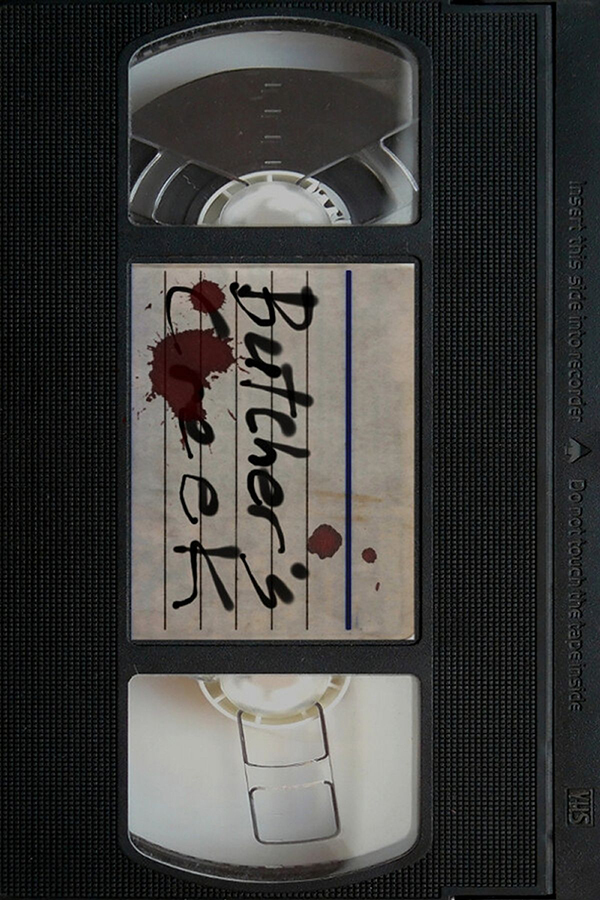

Butcher’s Creek
Every archived year-end list appearance, including placement and points earned.
About the Game
**Use rusty tools to brutalize a perverted gang of serial torturers in the remote Appalachian Forest.** *November, 1993...* A troubled loner with a hunger for cinematic gore finds himself on the other side of the camera when rumors of authentic snuff videotapes lead him to an abandoned cabin near Butcher's Creek, Pennsylvania. What starts as illicit urban exploration quickly becomes a fight for survival when he's captured by a gang of sadistic killers. Now his only option is to pick up a box cutter, a hammer, a pickaxe, or whatever else is at hand, and unleash a little video violence of his own. Butcher's Creek is a visceral first person action/horror game from the developer of **Dusk** and **Iron Lung**, inspired by classics like **Manhunt** and **Condemned: Criminal Origins**. Grab a blunt object and get to separating teeth from gums. _The filth of the world washes up in Butcher's Creek..._ # FEATURES - Use hammers, axes, pipes, 2x4s, box cutters, and more to brutalize anything that stands between you and freedom - Photograph gruesome murder scenes to fulfill your dark pseudo-sexual desires and regain lost health - Explore decaying farmhouses, collapsing factories, and seedy strip clubs in a forgotten corner of the Appalachian Forest - Experience a unique aesthetic combining the gritty shot-on-video look of found footage with the photosourced visual style of Source Engine games
| Developer | David Szymanski |
|---|---|
| Publisher | David Szymanski |
| Genres | Action, Adventure |
| Platforms | PC |
SingleplayerSteam CloudAtmosphericStory RichFirst-PersonPartial Controller SupportHorrorGoreExplorationAction-AdventureDarkHack and Slash
Where to Buy
Game information provided by RAWG.
Points by Year
List History
| Year | Source | List | Placement | Points |
|---|---|---|---|---|
| 2025 | NPR | The best games of 2025, picked by NPR's staff | Unranked | 1 |